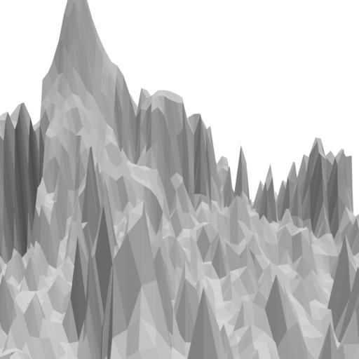
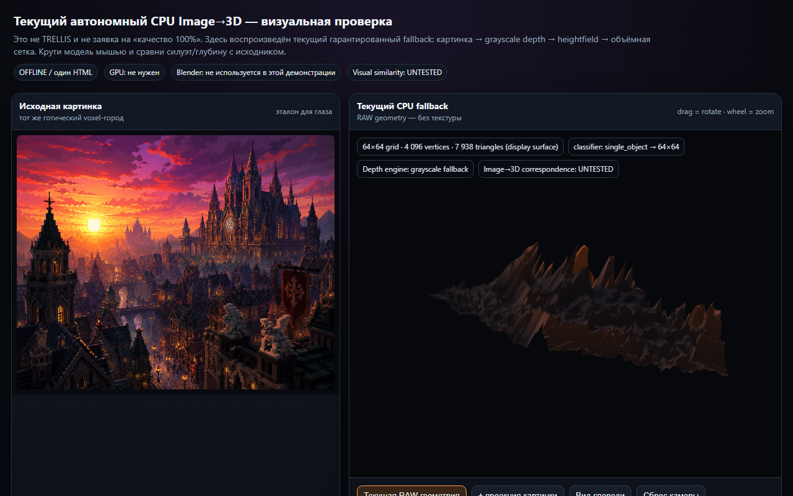

LEFT — Reference
CENTER — Real Server 3D (model.glb)
RIGHT — Render-back

DIAGNOSTIC ONLY — НЕ ФИНАЛЬНЫЙ РЕЗУЛЬТАТ. Эта страница только анализирует ошибки. Финальная ссылка обязана открывать walkable 3D-сцену с WASD/стрелками + мышью.
Baseline commit df70c22 — честный тест текущего CPU pipeline (grayscale_heightfield_cpu). Не TRELLIS, не улучшение до теста.


PREVIOUS CHATGPT LOCAL DEMO — это был локальный HTML (`AI3D_CURRENT_CPU_GOTHIC_CITY_OFFLINE.html`, 1.69 MB) в `Downloads`, НЕ серверный результат.
CURRENT REAL WORLD_SERVER OUTPUT — это `model.glb` 381KB, 9200 verts, 16380 faces, Z 0.86, `grayscale_heightfield_cpu` (honest), `HEIGHTFIELD-DOMINANT`, `RELIEF_DOMINANT` (parallax cx_var 12.9).
LOADING...